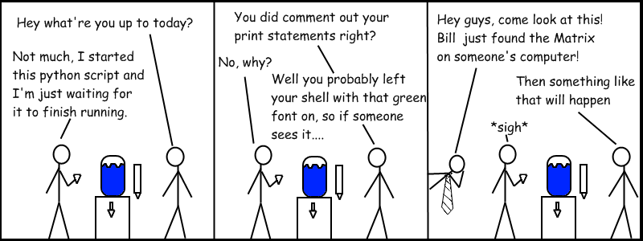

Journey to the center of the asynchronous world
Maciej Szulik
Szczyrk, 2014
TOC
About me
Generators
Coroutines
Context managers
asyncio concepts
Q & A
@soltysh
Programming ~10 years
C/C++, Java, JavaScript, Ruby, Bash, Go
But I Python
and I work for

def countdown(n):
while n > 0:
yield n
n -= 1
for c in countdown(3):
print(c)
c = countdown(3)
next(c)
next(c)
next(c)
next(c) # throws StopIteration exception
Iterator protocol - PEP-234
Generators - yield - PEP-255
def receiver():
while True:
item = yield
print("Got: ", item)
c = receiver() # create the generator
next(c) # advance to yield
c.send(43) # sending values to generator
c.send([1, 2, 3])
c.send("Hello")
Coroutines
generators on steroids
PEP-342
PEP-342
Generator methods
next() - advance code to the yield and emit a value
send() - sends a value to the yield, making it produce a value
close() - inform the generator that it should finish its work
throw() - sends an error to generator
def yieldfrom(x, y):
yield from x
yield from y
a = [1, 2, 3]
b = [4, 5, 6]
for i in yieldfrom(a, b):
print(i, ' ')
for i in yieldfrom(yieldfrom(a, b), yieldfrom(b, a)):
print(i, ' ')
Delegating to subgenerator - PEP-380
def returnyield(x):
yield x
return "Hi there"
file = open()
# do some stuff with file
file.close()
lock.acquire()
# do some stuff with lock
lock.release()
file = open()
# do some stuff with file
file.close()
with tempdir() as dirname:
print(dirname, os.path.isdir(dirname))
class tempdir(object):
def __enter__(self):
self.dirname = tempfile.mkdtemp()
return self.dirname
def __exit__(self, exc, val, tb):
shutil.rmtree(self.dirname)
Context managers - with - PEP-343
Context managers
__enter__() - start work with your object, returning it
__exit__() - release the object, or handle the exception
class tempdir(object):
def __enter__(self):
self.dirname = tempfile.mkdtemp()
return self.dirname
def __exit__(self, exc, val, tb):
shutil.rmtree(self.dirname)
class tempdir(object):
def __enter__(self):
self.dirname = tempfile.mkdtemp()
return yield self.dirname
def __exit__(self, exc, val, tb):
shutil.rmtree(self.dirname)
@contextmanager
def tempdir():
dirname = tempfile.mkdtemp()
try:
yield dirname
finally:
shutil.rmtree(dirname)
def contextmanager(func):
@wraps(func)
def helper(*args, **kwds):
return _GeneratorContextManager(func, *args, **kwds)
return helper
class _GeneratorContextManager(ContextDecorator):
# ...
def __enter__(self):
try:
return next(self.gen)
except StopIteration:
raise RuntimeError("generator didn't yield") from None
def __exit__(self, type, value, traceback):
if type is None:
try:
next(self.gen)
except StopIteration:
return
else:
raise RuntimeError("generator didn't stop")
else:
# ...
def executor(x, y):
time.sleep(10)
return x + y
pool = ThreadPoolExecutor(8)
fut = pool.submit(executor, 2, 3)
fut.result()
def executor(x, y):
time.sleep(10)
return x + y
def handle_result(result):
print("Got: ", result.result())
pool = ThreadPoolExecutor(8)
fut = pool.submit(executor, 2, 3)
fut.add_done_callback(handle_result)
class Task:
def __init__(self, gen):
self._gen = gen
def step(self, value=None):
try:
fut = self._gen.send(value)
fut.add_done_callback(self._wakeup)
except StopIteration as exc:
pass
def _wakeup(self, fut):
result = fut.result()
self.step(result)
def executor(x, y):
print("I'm going to sleep for a while...")
time.sleep(10)
return x + y
def do_exec(pool, x, y):
result = yield pool.submit(executor, x, y)
print("Got: ", result)
Task(do_exec(pool, 1, 2)).step()
def recursive(pool, n):
yield pool.submit(time.sleep, 0.001)
print(n)
Task(recursive(pool, n+1)).step()
class Task(Future): # <-----
def __init__(self, gen):
super().__init__() # <-----
self._gen = gen
def step(self, value=None):
try:
fut = self._gen.send(value)
fut.add_done_callback(self._wakeup)
except StopIteration as exc:
self.set_result(exc.value) # <-----
def _wakeup(self, fut):
result = fut.result()
self.step(result)
def executor(x, y):
print("I'm going to sleep for a while...")
time.sleep(10)
return x + y
def do_exec(pool, x, y):
result = yield from pool.submit(executor, x, y)
return result
pool = ProcessPoolExecutor(8)
t = Task(do_exec(pool, 2, 3))
t.step()
print("Got ", t.result())
def patch_future(cls):
def __iter__(self):
if not self.done():
yield self
return self.result()
cls.__iter__ = __iter__
class Task(futures.Future):
"""A coroutine wrapped in a Future."""
def _step(self, value=None, exc=None):
try:
if exc is not None:
result = coro.throw(exc)
elif value is not None:
result = coro.send(value)
else:
result = next(coro)
except StopIteration as exc:
self.set_result(exc.value)
def _wakeup(self, future):
try:
value = future.result()
except Exception as exc:
self._step(None, exc)